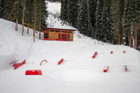
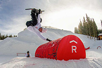
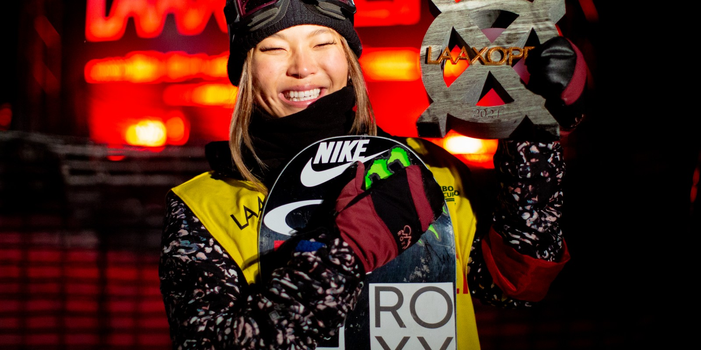
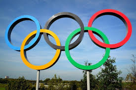

Red Gerard Opens Terrain Park
Olympic Slopestyle Gold Medalist, Red Gerard collaborated with Copper Mountain in Colorado to create a free terrain park. Before Red won the olympics, he would practice snowboarding in his backyard on rails and handmade jumps. Gerard’s backyard has gained popularity since he won a gold medal at the 2018 Winter Olympics so he teamed up with Woodward Parks at Copper Mountain to make snowboarding more affordable for young athletes. Red’s Backyard is inspired by Red’s own backyard. Now athletes can hike up to the park without having to buy a $120 lift ticket. It’s an easy hike and parents are able to watch from the bottom. Red’s main goal was to support the younger generation of athletes and inspire more to learn how to snowboard. You can find Red’s Backyard at other resorts such as Killington in Vermont and Park City.
Check out Red’s Backyard trailer on Youtube
Here is a video about how Red’s Backyard came about


Chloe Kim is Back
Women’s snowboard powerhouse, Chloe Kim, is back after almost a two year break. Chloe Kim decided to take a break from snowboarding after winning gold in the 2018 Winter Olympics to attend Princeton University but this year she decided to put her academic career on hold to return to the world of competitive snowboarding. Chloe said “Right now I’m working on getting my body back into snowboarding shape. I’m really excited to get back and I think the break was really good… It was getting really repetitive for me, just competing, traveling, the same people all the time. Always. No new faces, nothing. The people I was surrounding myself with, I knew since I was like a child, we all grew up together. I thought I needed to experience more, and I really wanted to experience school.”
Chloe made her return to snowboarding by winning the Laax Open. To have a snowboarder come back after a 22 month break and demolish the other competitors is insane. Chloe resumed her training in October and showed no signs of being rusty. On her first run she fell from her attempt at a frontside 1080 but she quickly recovered in her second run and was rewarded with a score of 94 out of 100. Chloe's combination of complex tricks, style, and height of jumps is why she dominates the competition. She is also the only woman to have ever landed back-to-back 1080s which makes her unbeatable.
Check out Chloe’s winning run at the 2021 Laax Open

2022 Winter Olympics Might Be Taken Away From China
China’s human rights record has gotten the attention of lawmakers in countries such as the Netherlands, Canada, and the U.S. They strongly believe that China should not be able to host the Winter Olympics due to their repression of its Uighur Muslim population. Dutch and Canadian parliaments and the United States have labeled it “genocide.” It is considered to be the largest genocide of a minority group since World War II. Evidence of forced sterilization and rape make many believe that China has no right to host the Olympics. This isn’t the first Olympics that has sparked a debate about stripping the host country of its privileges. During the 1936 Olympics in Nazi Germany, the U.S considered backing out. In 1980, the Soviet Union invaded Afghanistan so the U.S boycotted the Moscow Olympics. Many are also placing the blame on the International Olympic Committee and the International Paralympic Committee for awarding the games to a country with deplorable human rights patterns.
